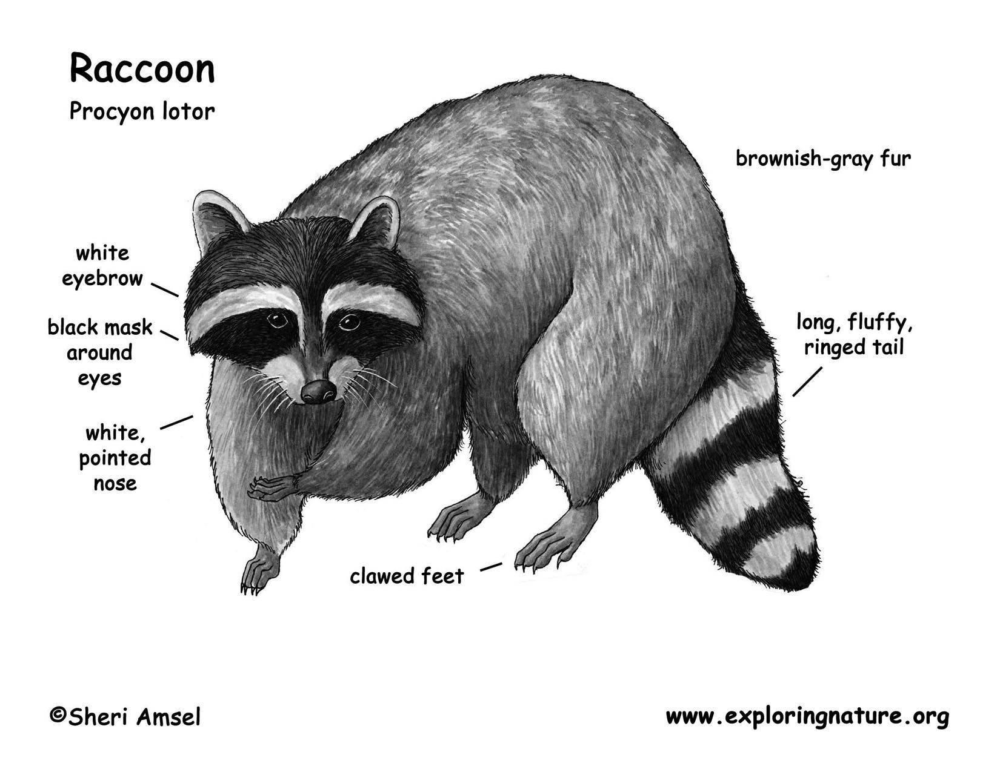

Racoons
Raccoons are very smart and their antics are known
around the world as they will do just about anything to get
to the food. Their cute masked face has made them a favorite
animal and although wild, some people have actually raised
them as pets.

- Deer Facts for Kids
- Raccoons are actually more closely related to
bears than the foxes that they look like.
- The intelligence of a raccoon is so great that they
can figure out the answers to problems and remember quite
intricate tasks for up to 3 years.
- The population of raccoons is diminishing due to the
expansion of people and cities.
- Raccoons are mammals and are also carnivores, but a raccoon
will eat many types of fruits and vegetables as well.